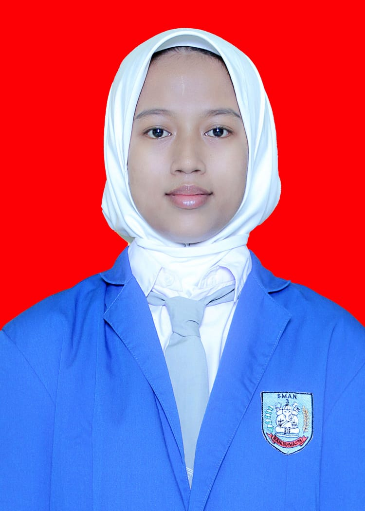

Syifa Amalia Ikhsan
+6287846779346
Banjarmasin, Indonesia

PROFIL
Mahasiswa D4 Bisnis Digital yang memiliki ketertarikan pada bidang bisnis, digital marketing, dan teknologi.
Memiliki kemauan untuk belajar, berkerja dalam tim, serta mengembangkan kemampuan
dan mendapatkan pengalaman baru di bidang bisnis digital
PENGALAMAN
Analisis kebiasaan nongkrong dan minat menabung mahasiswa
Tugas mata kuliah statistika (2026)
- Membuat diagram batang berdasarkan data pada variable pertama
- Berkontribusi dalam penyusunan laporan bersama anggota kelompok
PENDIDIKAN
- Politeknik Negeri Banjarmasin, D4 Bisnis Digital (2025-sekarang)
- SMA Negeri 3 Banjarmasin, jurusan IPA (2022-2025)
BAHASA
- Indonesia
- Inggris
KEMAMPUAN
- Kemauan untuk bekerja dalam tim
- Kemauan untuk belajar